PySpark and Parquet: Elegant Python DataFrames and SQL¶
Introduction¶
In a recent article on Python PyArrow and Parquet, we discussed the speed and size advantages of the Parquet data format and the performance of PyArrow compared to Pandas. We also compared the performance of Pandas, Polars, and native PyArrow for working with Parquet files.
Since then, two things have captured our attention (one old, one new):
Another important Python project where Parquet is heavily used and well supported is PySpark, which we wanted to revisit and have not yet discussed much on this blog. Parquet also has a dependency on PyArrow.
Pandas has begun shipping release candidates for Python 2.0.0, which now features an option for using PyArrow rather than NumPy internally.
Since we already wanted to see how PySpark handled large data sets in Python as a follow-up to our earlier article of the same name, we thought this would be an excellent time to see how PySpark’s API and performance compared to that of not only PyArrow and Polars, which we’ve already investigated but also the new and improved Pandas.
What We’ll Cover¶
To help get you started with PySpark, we’ll first go over installing it and configuring a must-have SparkSession object in JupyterLab. After this, some of the topics we’ll cover include:
What Is PySpark?
Installing PySpark via pip or conda
Basic loading and saving of Parquet files
Improving the display
Partitioning
Querying directly from Parquet files
How PySpark stores table data
What Is PySpark?¶
Python is a Python interface to Spark, a tool for doing data analytics, data engineering, and machine learning on local machines or clusters of machines. For this reason, unlike Pandas, which does not scale well to clusters without third-party libraries, PySpark supports data analysis at scale “out of the box,” so to speak.
Spark itself is written in Scala, so the fact that PySpark is an interface to the Spark libraries means we’ll need one additional dependency before we install the Python library.
Installing PySpark and JupyterLab¶
The Scala code that Spark is written in targets the Java Virtual Machine (JVM), so before installing PySpark, we’ll need to ensure we have at least Java 8 installed on our system. I have the JDK (the Java Development Kit), but if space is a concern, you can probably get by with just the JRE (Java Runtime Environment), which is smaller. You can download either option from the Java downloads page.
Some PySpark documentation claims you’ll also need to set JAVA_HOME. Still, I’ve verified both by testing and by reviewing the PySpark code that if that isn’t set, having the java executable on your path is sufficient. You can verify this using java --version.
With Java available, we can install a basic PySpark plus some basic tools to give us a JupyterLab environment using either Pip or Conda.
Installing With Pip and Venv¶
Here’s how to install what you need using pip and the venv module:
python -m venv venv
# On Mac/Linux
source venv/bin/activate
# On Windows
.\venv\Scripts\activate
# On any system
pip install --upgrade pip
pip install pyspark ipython jupyterlab
Installing with Conda¶
conda create -n pyspark python=3.11 pyspark ipython jupyterlab
conda activate pyspark
Testing The Installation¶
Perhaps the easiest way to run PySpark is to use the PySpark shell, which will create a SparkSession behind the scenes for you. Simply type Spark from one of the environment
% pyspark
Python 3.11.0 | packaged by conda-forge | (main, Jan 14 2023, 12:25:12) [Clang 14.0.6 ] on darwin
...
Welcome to
____ __
/ __/__ ___ _____/ /__
_\ \/ _ \/ _ `/ __/ '_/
/__ / .__/\_,_/_/ /_/\_\ version 3.3.2
/_/
...
SparkSession available as 'spark'.
That’s all looking good. In JupyterLab or a Python script, we’ll need to set up the SparkSession object ourselves, but it’s easy to do. Use jupyter lab to run Jupyter, then create a new Python 3 notebook. In a cell, the following code will create a SparkContext:
from pyspark.sql import SparkSession
spark = (SparkSession.builder.appName("pyspark_parquet")
.config("spark.sql.crossJoin.enabled","true")
.getOrCreate())
You’ll see some warnings that can be safely ignored.
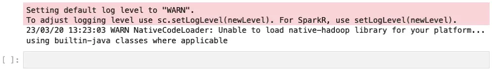
By the way, if you’re curious about the extra parentheses before SparkSession and on the last line, this is just a trick in Python, so we can write this “one-liner” as a multi-line expression. Since PySpark makes extensive use of the builder pattern so we can chain expressions, you’ll find this frequently in PySpark code.
As a final test, you can run a query to ensure everything works correctly. Using SQL in Spark is easy. For example:
spark.sql("select current_date() as today;").show()
Output (example):
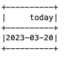
Reading Parquet Files in PySpark¶
OK, enough sanity checks – we’re ready to start working with Parquet files. Parquet is a fast, binary, column-based storage format that supports compression. Throughout this article, we’ll use the taxis dataset (download file), which is based on the CSV Seaborn sample example.
In PySpark, there are at least two ways to work with an existing Parquet file.
Using Spark’s Read Method¶
First, we can load the file into a PySpark DataFrame in memory using the spark.read method. Here we do that and print out some basic information about the DataFrame.
taxis = spark.read.format("parquet").load("./taxis.parquet")
print(type(taxis))
taxis.printSchema()
print(f"Rows: {taxis.count()}")
Output:
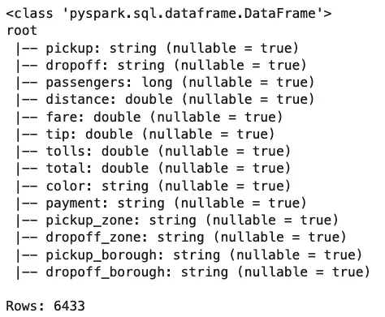
Querying a File with Spark SQL¶
Loading a file into a DataFrame like this is a commonplace operation in Pandas, PolaRS, and many other tools, but where Spark really shines is in SparkSQL’s ability to query files like Parquet files directly. For example, let’s say we want to know how far a cabbie has to drive to earn their top fares. Here’s how we might get at that answer.
top_fares = spark.sql("SELECT fare, tip, fare + tip as total, distance, tolls from parquet.`taxis.parquet` order by fare desc limit 10")
top_fares.show()
Output:
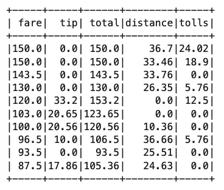
Notice that we’ve still created a DataFrame here as “top_fares,” but now we’ve used far less memory for it than when we loaded the entire file into memory. Of course, we’ve already loaded as df, so we might want to run the same query against it instead. We can’t do that directly, but we can create a temporary “view” of it and query that instead.
taxis.createOrReplaceGlobalTempView("taxis")
spark.sql("SELECT fare, tip, fare + tip as total, distance, tolls from global_temp.taxis order by fare desc limit 10").show()
The output would be the same as shown above.
And speaking of the output, the ASCII-ish view shown above would be fine for something like the PySpark shell, but in a notebook, it isn’t as pretty as what we get for free in Pandas or PolaRS. Let’s fix that now by taking a short detour from our main topic.
How To Improve PySpark’s DataFrames Display¶
When you start working with PySpark DataFrames, you might try “running” the name of the DataFrame object in a cell as you would for a Pandas DataFrame. If you did that, the result probably surprised you.
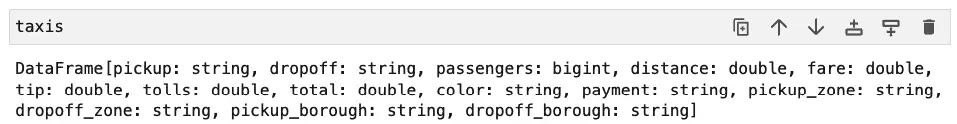
That simple __repr__ style output was probably not what you wanted to see.
Also, as we’ve already mentioned, the ASCII-style output of the show method on the PySpark DataFrame is not very satisfactory if we’re working in a Notebook.
There are a couple of options when working in a notebook to get things looking a little more polished. Probably the best option for Notebook work is to use the following configuration setting:
# For Jupyter Notebook / Lab use only.
spark.conf.set("spark.sql.repl.eagerEval.enabled", "true")
This changes how the __repr__ method behaves, so just using the name of the DataFrame gives you a result that looks more like what we see in Pandas. The first twenty rows are shown, but here we show the top five.
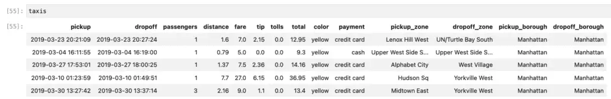
The second option for improving the display of the PySpark DataFrame also has other uses as well. Here we convert the PySpark DataFrame to one that behaves somewhat like a Pandas DataFrame. Doing this relies on having pandas installed:
# One time only:
!pip install pandas
taxis_pandas = taxis.pandas_api()
taxis_pandas.head()
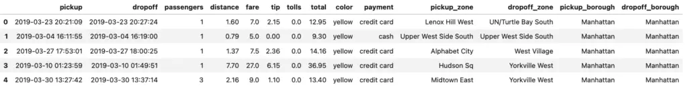
Note that here we saved the result and called the head method on it rather than just using the name (taxis_pandas) directly. The pandas_api() function doesn’t emulate Pandas perfectly, so using the raw name shows the first 1,000 rows!
Writing Parquet Files¶
The write attribute of PySpark’s DataFrame object is not a method but a reference to a DataFrameWriter object, which allows you to save the DataFrame to many different formats, including Parquet, CSV, and external or Parquet database formats. The parquet method is the one that interests us, and the code is an easy one-liner.
top_fares.write.parquet("./top_fares.parquet", mode="overwrite")
If we list the contents of our directory now, we notice that top_fares is not written as a single file but as a folder. If we wait a moment, we can also see this in the sidebar in Jupyter lab.
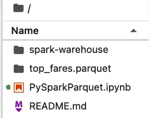
PySpark more or less assumes that you’re going to partition your data set, and if it doesn’t need to do so, it still creates a folder with a single partition, as shown below:
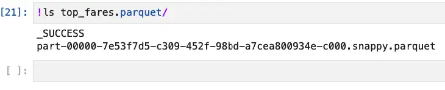
If you really need or want to store this as a single parquet file, you can do so by first converting the DataFrame to Pandas (using toPandas(), not pandas_api()), then calling the appropriate Pandas method:
top_fares.toPandas().to_parquet('./top_fares_pandas.parquet')
Again, this relies on also having Pandas installed. Unlike pandas_api, the toPandas method returns a true pandas.core.frame.DataFrame object, not an imperfect implementation of the Pandas API.
Partitioning Parquet Files¶
PySpark supports partitioning Parquet files to improve the performance of certain queries. For example, suppose you need to run one or more queries summarizing data by where the driver picked up a passenger. In this case, you could partition the data by pickup_borough, allowing the query to be distributed. This can result in a performance boost even on a single machine.
Here’s the code to partition and save the file
taxis.write.parquet("taxis_by_pickup_borough.parquet", partitionBy="pickup_borough")
On disk, the structure of the partitioned data looks like this:
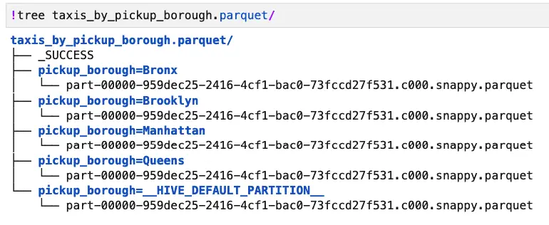
Let’s see how the performance of the query is affected by this change by comparing it to the same query run against the original taxis.parquet file. First, let’s look at the unpartitioned case:
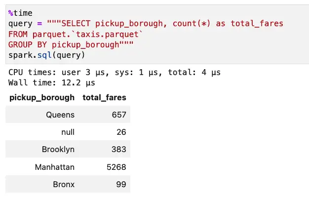
Next, we’ll run the same query against our partitioned data:
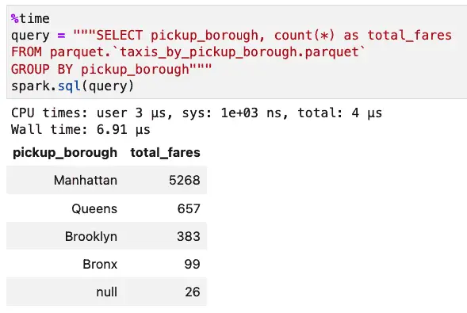
With the partitioned data set, the query took 6.91 microseconds instead of 12.2 microseconds. This sort of savings is noticeable now but even more important as data grows. We have less than 7,000 rows of data in this dataset. It’s enough to prove the case, but it’s hardly “big data.”
Incidentally, the ORC data format also supports partitioning data, and the syntax for writing and querying it parallels that of Parquet, i.e.:
taxis.write.orc("taxis_by_pickup_borough.orc", partitionBy="pickup_borough", mode="overwrite")
spark.sql("SELECT pickup_borough, count(*) from orc.`taxis_by_pickup_borough.orc` group by pickup_borough")
At the scales we’re dealing with here, ORC and Parquet offer comparable performance on SELECT queries, but Parquet’s write performance is consistently faster.
Parquet vs. PySpark Tables¶
Another argument to consider in favor of Parquet as a data format for PySpark is that it is used by default when you create a Spark table. To see this in action, let’s re-save our taxis DataFrame to a table, partitioning it the same way by pickup_borough.
taxis.write.saveAsTable("taxis_by_pickup", partitionBy="pickup_borough", mode="overwrite")
That done, we can now query it by table name, with exactly the simple naming format might expect when using a RDBMS:
spark.sql("SELECT pickup_borough, count(*) as total_fares from taxis_by_pickup group by pickup_borough")
Spark’s tables are stored in the spark-warehouse directory, created automatically when you run PySpark. So we can see our table structure on disk and verify its format as shown below:
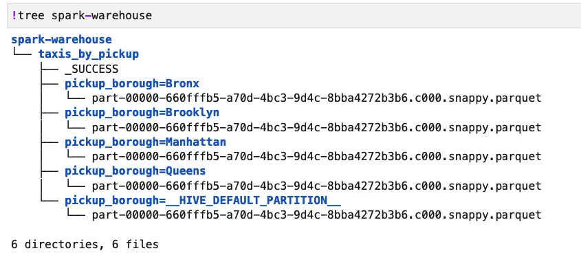
This shows us that the default data structure used by createTable was Parquet. Moreover, the layout and query performance is quite similar to what we showed before for a partitioned Parquet dataset. The main advantages to saving parquet files as tables are to simplify select queries slightly and to enable easy use of other SQL operations, such as “SHOW TABLES” or “DESCRIBE TABLE taxis_by_pickup.”
Closing Thoughts¶
In the course of our examination of PySpark and Parquet, we saw how easy it is to load and save data into a DataFrame. The interoperability with Pandas means you can be productive right away, while the ability to directly query files in a distributed environment or locally using Spark SQL should be a welcome addition to your toolkit.